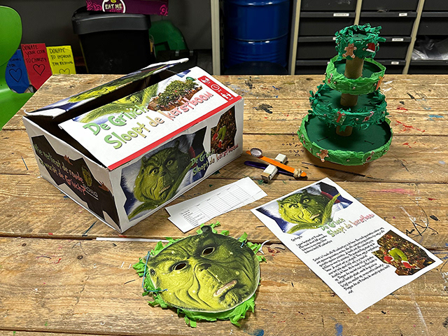

Maker at heart.
Born in '97, Delft. As a CMD student at the Hogeschool Utrecht, I bridge the gap between practical woodworking, electrical engineering, and the endless potential of digital media.
Where others see only screens, I see an opportunity to fuse physical installations with digital realities. Whether I am managing complex communities, illustrating, or tinkering in my workshop—I approach every challenge with a dedicated 'maker-mindset'.
Physical Craft
Currently crafting a cabinet inspired by the Poul Cadovius Royal System, using birch and falcata plywood, alongside floating benches with French cleats to combine timeless aesthetics with modern spatial design.
Systems Engineering
Smart Home Integration specialist, bridging the gap between hardware and software through custom lighting logic and automated environmental controls.
Digital Foundation
My own Linux AI Homelab drives my creative workflows and serves as the infrastructure for this portfolio—a testament to technical self-reliance.
The Workbench

Generation Plastic Soup
2025 – Visualizing our environmental impact.

Street Fresh
2024 – Urban dynamics captured in form and color.

Samen Spelen
2024 – Interactive design fostering social connection.

Grijpmachine
2024 – A nod to nostalgia, translated into modern interaction.

Kodak
2024 – Analog feel, digital vision.

Bomby Bird
2024 – Game design & interaction architecture.

Sophie's Picnic
2023 – Immersive experience design.

OSRS Community
2023 – Digital community event architecture.

The Grinch Spatial
2023 – Narrative spatial design exploration.

Vechtclub XL
2023 – Visual identity & community building.

Institutional Flow
2022 – Institutional interaction study.

Conceptual Storytelling
2022 – Narrative digital exploration.
Let's Connect
Open for technical collaborations, design inquiries, or sharing thoughts on the intersection of craftsmanship and technology.